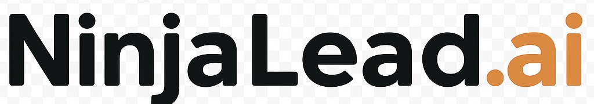
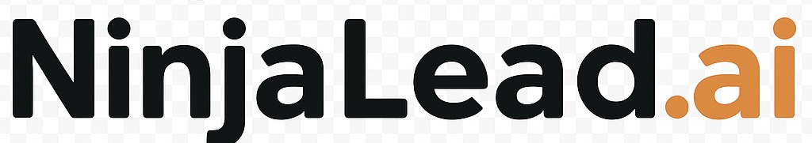

NinjaLead.ai utilise l’intelligence artificielle pour vous aider à lancer des campagnes marketing puissantes et ciblées, en quelques clics seulement. Dites adieu à la complexité technique et bonjour aux résultats concrets.
Créer mon compte gratuitementIndiquez simplement à NinjaLead.ai ce que vous souhaitez accomplir : augmenter vos ventes, générer des leads, améliorer la visibilité, etc.
Notre IA analyse votre niche et crée une stratégie marketing personnalisée, incluant les campagnes et contenus optimisés.
Validez les propositions de l'IA, lancez vos campagnes et suivez les performances en temps réel pour des ajustements rapides.
Découvrez comment notre plateforme IA révolutionne votre approche marketing et vous propulse vers le succès.
Laissez notre algorithme avancé générer des campagnes ultra-ciblées, parfaitement adaptées à votre marché, pour un retour sur investissement maximal.
Transformez vos descriptions produits en arguments de vente irrésistibles, rédigés automatiquement par l'IA pour captiver et convertir.
Comprenez en profondeur qui achète vos produits, pourquoi, et comment leur parler efficacement grâce à des analyses claires et exploitables.
Recevez des suggestions concrètes et des plans d'action marketing à fort impact, priorisés pour ne jamais manquer une opportunité de croissance.
Que vous soyez e-commerçant, créateur de contenu, formateur en ligne ou coach indépendant, NinjaLead.ai est votre allié stratégique. Nous vous libérons des complexités et des tâches chronophages du marketing technique pour que vous puissiez vous reconcentrer sur ce que vous faites de mieux : développer vos offres et servir vos clients.
Avec NinjaLead.ai, la croissance de votre activité n'est plus un casse-tête, mais une conséquence naturelle de stratégies marketing intelligentes et automatisées.
Une interface utilisateur pensée pour être intuitive dès la première connexion. Obtenez des résultats concrets rapidement, sans courbe d'apprentissage abrupte.
Profitez de la puissance de notre IA de pointe, entraînée pour analyser les marchés de niche et concevoir des stratégies marketing plus intelligentes et plus performantes.
Automatisez les aspects répétitifs du marketing digital. Consacrez votre temps et votre énergie à l'innovation et au développement de votre cœur de métier.
NinjaLead.ai est spécifiquement adapté aux besoins des entrepreneurs solo et des petites équipes qui veulent un impact maximal sans avoir besoin d'une grande équipe marketing dédiée.

"NinjaLead.ai a transformé ma façon de faire du marketing. En quelques clics, j'ai pu lancer des campagnes qui m'auraient pris des jours avant. Incroyable !"
- Jean Dupont
E-commerçant

"Les fiches produits générées par l'IA sont d'une qualité exceptionnelle. Mes taux de conversion ont grimpé en flèche !"
- Marie Curie
Créatrice de Contenu

"Je n'aurais jamais pensé qu'une plateforme pouvait analyser mes données client avec autant de précision. NinjaLead.ai est indispensable."
- David Martin
Coach Indépendant

"Grâce aux OSP, je sais exactement où concentrer mes efforts marketing pour une croissance maximale. Un gain de temps énorme !"
- Sophie Durand
Formatrice en ligne

« Grâce à NinjaLead.ai, j’ai automatisé 80 % de mon marketing et doublé mes conversions en 3 semaines. C'est un véritable game-changer pour ma boutique ! »
– Sarah B., Fondatrice d’une boutique Shopify
+1 000
utilisateurs conquis
4,9/5
noté sur AppIndex
Absolument ! NinjaLead.ai a été conçu avec la simplicité en tête. Notre interface intuitive vous guide pas à pas, et l'IA s'occupe de la complexité technique en arrière-plan. Vous serez opérationnel en quelques minutes.
Non, aucune connaissance préalable en intelligence artificielle n'est requise. NinjaLead.ai est votre expert IA intégré, rendant la puissance de l'IA accessible à tous les entrepreneurs, sans effort.
NinjaLead.ai est idéal pour les e-commerçants, les créateurs de contenu, les formateurs en ligne, les coachs, et toute petite entreprise ou indépendant cherchant à maximiser son impact marketing dans une niche spécifique.
Vous pouvez créer votre compte gratuitement et commencer à explorer les fonctionnalités de base. Nous proposons ensuite différentes formules adaptées à vos besoins de croissance, toutes sans engagement et annulables à tout moment.
Oui, absolument ! Nos algorithmes IA sont conçus pour s'adapter à diverses spécificités régionales et culturelles, y compris celles du Québec. Cela nous permet de générer des campagnes et du contenu qui résonnent avec votre audience locale.
Tout à fait ! Notre IA est entraînée sur un vaste corpus de données incluant des nuances linguistiques et des expressions propres au français québécois, garantissant que vos messages sont authentiques et pertinents pour votre clientèle locale.
Notre équipe de support est sensibilisée aux fuseaux horaires et aux réalités du marché québécois pour vous offrir une assistance rapide et pertinente, que ce soit par chat, courriel ou via notre centre d'aide.
Nous sommes si confiants dans la valeur de NinjaLead.ai que nous offrons une **garantie de remboursement à 100%** si vous n'êtes pas satisfait. Consultez nos conditions générales pour plus de détails, mais votre satisfaction est notre priorité.
Notre système de parrainage est simple : partagez votre lien unique avec d'autres entrepreneurs. Dès qu'ils s'inscrivent et commencent à utiliser NinjaLead.ai, vous recevrez des jetons. Ces jetons peuvent être utilisés pour débloquer des fonctionnalités premium ou des crédits supplémentaires.
Oui ! Nous valorisons énormément l'avis de nos utilisateurs. Tout feedback constructif, en particulier s'il apporte une valeur ajoutée ou aide à améliorer la plateforme, sera récompensé par des jetons. C'est notre façon de vous remercier de contribuer à l'évolution de NinjaLead.ai.
De nombreux utilisateurs commencent à voir des améliorations significatives de leurs métriques de marketing en quelques jours ou semaines, grâce à la rapidité de création de campagnes et à la précision du ciblage permise par l'IA.
NinjaLead.ai est conçu pour être flexible. Nous travaillons constamment à l'intégration avec les plateformes et outils marketing les plus populaires pour fluidifier vos workflows. Des informations détaillées sont disponibles dans notre documentation.
La sécurité de vos données est notre priorité absolue. Nous utilisons des protocoles de cryptage avancés, des serveurs sécurisés et des pratiques de gestion des données conformes aux normes industrielles pour protéger vos informations.
Rejoignez des milliers d'entrepreneurs qui transforment déjà leur marketing avec NinjaLead.ai.
Je crée mon compte maintenantC’est gratuit pour commencer, sans engagement. Annulation en un clic.
 
